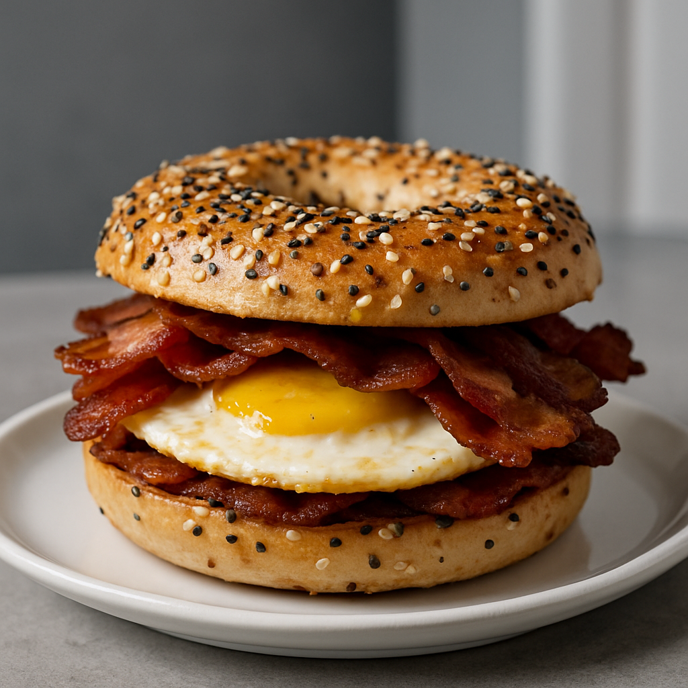

Breakfast Bagel
Home

Specialty bagel by BuiltWithRobK
Description
Bagel inspired by my favorite meal of the day and the best tasting ingredients.
This bagel is all about savory flavor and pairs well with a solid cup of coffee.
Ingredients
- Everything bagel: 1EA
- Egg over hard: 1EA
- Bacon of choice: 2 stips
- Mayonaise: to taste
- Lowry's seasoned salt: to taste
- Pepper: to taste
Put it all together
- Cook bacon. Best if grilled.
- Crack a single egg into frying pan. Cook till "over hard," but feel free to leave it a little runny. Immediately add seasoning salt and pepper after egg is in the pan
- While cooking the egg, toast bagel lightly to warm, but we don't want it crunchy and hard
- Add mayonaise to the top only, followed by the bacon, eggs, and then the bottom of the bagel. ENJOY!